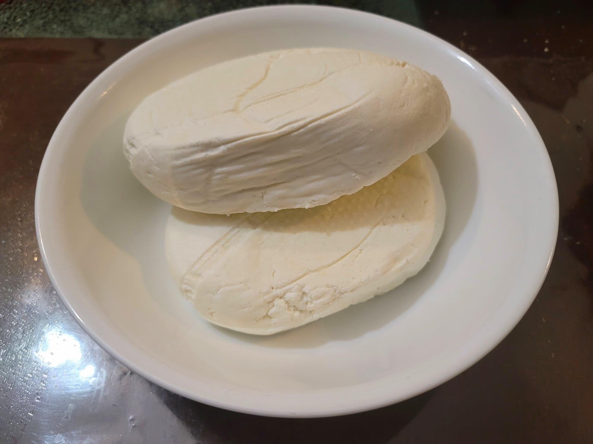

Farmer's Cheese/Tvorog/Paneer

Ingredients:
- 1 gallon Milk, preferably unpasteurized
- 1/2 cup White vinegar or Lemon juice
Instructions:
- Add the milk to a large pot and heat over medium/medium-low heat. Stir often to prevent scorching. Bring to a near boil, about 190 degrees Fahrenheit. Takes about 30-40 minutes.
- Once 190 degrees Fahrenheit, remove from heat and gently stir in the vinegar. Stir for about 1 minute to let completely curdle. Then let cool to room temperature.
- Pour into a cheesecloth or nut milk bag to strain out the whey. Squeeze to remove as much whey as possible. Place the cheesecloth onto a colander over a large bowl and weigh down with a heavy object. Transfer to a fridge and let rest for 3-4 hours.
- Remove from the cheesecloth and wrap with plastic wrap. Return to the fridge to store.